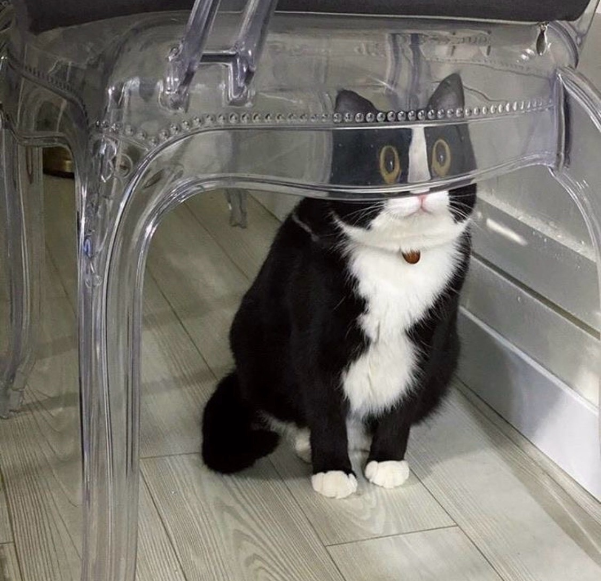

<!-- start_tm.html -->
{% extends 'base.html' %}

{% load static %}

{% block static %}
    <!-- 외부 CSS 파일에 대한 링크 -->
    <link rel="stylesheet" type="text/css" href="{% static 'css/main.css' %}">
{% endblock %}

{% block content %}
<div id="main" class="container">
    <hr>
    <br><br>

    <h3>Outbound TM</h3>
    <a>tm 목적:  {{ input_data }}</a>

    <!-- main -->
    <div id='main' class='containered' style='display: flex; justify-content: space-between; align-items: flex-start;'>
        <div id='chart' style='width: 200px; border: 1px solid #ccc; text-align: center;'>
            <h3 style='font-size: 1rem;'>선택된 고객 목록</h3>
            <table border='1'>
                <thead>
                    <tr>
                        <th><input type='checkbox' id='select-all'></th>
                        <th>이름</th>
                        <th>주소</th>
                    </tr>
                </thead>
                <tbody>
                    {% for client in selectedClients %}
                        <tr>
                            <td><input type='checkbox' name='client_ids' value='{{ client.id }}'></td>
                            <td>{{ client.name }}</td>
                            <td>{{ client.location }}</td>
                        </tr>
                    {% endfor %}
                </tbody>
            </table>

            <h3 style='font-size: 1rem;'>선택된 파일 목록</h3>
            <table border='1'>
                <thead>
                    <tr>
                        <th><input type='checkbox' id='select-all2'></th>
                        <th>파일 이름</th>
                    </tr>
                </thead>
                <tbody>
                    {% for file in selectedFiles %}
                        <tr>
                            <td><input type='checkbox' name='file_ids' value='{{ file.id }}'></td>
                            <td>{{ file.file.name|cut:"_"|slice:"1:" }}</td>
                        </tr>
                        {% endfor %}
                    </thead>
                </table>
                <button id='goBack' onclick='goBack()'>뒤로가기</button>
            </div>

        <!-- 채팅 대화창 -->
        <div class='chat-container'>
            <div class='user-info'>
                
                <span>User123</span>
                <div class='user-status-indicator'></div>
            </div>

            <div class='chat-messages' id='chat-messages'>
                <!-- 채팅 메시지들이 동적으로 추가될 부분 -->
                <div class='message received'>
                    <div class='message-bubble' id='initialMessage'>{{ question.0 }}</div>
                </div>
            </div>
            <div class='input-container'>
                <input type='text' id='message-input' placeholder='Type your message...'>
                <button class='send-button' onclick='sendMessage()'>Send</button>
            </div>
        </div>
        {% comment %} <div>
            <audio controls>녹음된 소리를 재생할 audio 엘리먼트</audio>
                    <br><br><br><br><br>
                    <div class="button-container">
                        <!-- 시작할 때 드러날 버튼들 -->
                        <button id="recordbutton" onclick="showButton('startrecord');" style="background-image: url('{% static 'loading_recording/icons8-recording-60.png' %}');" class="button-image"></button>
                        <button id="playbutton" onclick="playAudio(); showButton('playvoice');" style="background-image: url('{% static 'loading_recording/icon8-play-60.png' %}');" class="button-image"></button>
                        <!-- 시작할 때 숨어있을 이미지, 버튼들 -->
                        <button id="no_record" style="display: none; background-image: url('{% static 'loading_recording/icons8-no-record-60.gif' %}');" class="button-image"></button>
                        <button id="stop_record" onclick="showButton('stoprecord');" style="display: none; background-image: url('{% static 'loading_recording/icons8-voice-recognition-60.gif' %}');" class="button-image"></button>
                        <button id="no_play" style="display: none; background-image: url('{% static 'loading_recording/icons8-hearing-60.png' %}');" class="button-image"></button>
                        <button id="playing" onclick="showButton('stoprecord');" style="display: none; background-image: url('{% static 'loading_recording/icons8-speech-bubble-60.gif' %}');" class="button-image"></button>
                    </div>
                </div>
        </div> {% endcomment %}
    </div>
</div>

<script>
    function goBack() {
        window.history.back();
    }

    const chatInput = document.getElementById('message-input');
    const chatMessages = document.getElementById('chat-messages');
    const initialMessage = document.getElementById('initialMessage');
    const questions = [{% for q in question %}'{{ q }}', {% endfor %}];

    let currentQuestionIndex = 1;  // 0번째 질문은 이미 보여주었으므로 1부터 시작

    // 기존 코드
    function sendMessage() {
        const userMessage = chatInput.value.trim();

        if (userMessage !== '') {
            // 사용자의 입력을 채팅창에 동적으로 추가
            const userChatMessage = document.createElement('div');
            userChatMessage.className = 'message sent';
            userChatMessage.innerHTML = `<div class="message-bubble">${userMessage}</div>`;
            chatMessages.appendChild(userChatMessage);

            // '네'에 대한 응답을 자동으로 추가
            if (userMessage === '네') {
                if (currentQuestionIndex < questions.length) {
                    const neMessage = document.createElement('div');
                    neMessage.className = 'message received';
                    neMessage.innerHTML = `<div class="message-bubble">${questions[currentQuestionIndex]}</div>`;
                    chatMessages.appendChild(neMessage);
                    currentQuestionIndex += 1;
                } else {
                    // 모든 질문에 대한 응답이 끝났을 경우 채팅 종료
                    const endMessage = document.createElement('div');
                    endMessage.className = 'message received';
                    endMessage.innerHTML = '<div class="message-bubble">채팅 종료</div>';
                    chatMessages.appendChild(endMessage);
                    // 추가로 필요한 동작 수행 (채팅 종료 등)
                }
            }

            // 입력창 초기화 및 포커스 유지
            chatInput.value = '';
            chatInput.focus();
        }
    }

    // 엔터 키를 누를 때 sendMessage 호출
    chatInput.addEventListener('keyup', function (event) {
        if (event.key === 'Enter') {
            sendMessage();
        }
    });
            
    /*function showButton(val) {
        var startrecordButton = document.getElementById('recordbutton');
        var playButton = document.getElementById('playbutton');
        var cantrecordimg = document.getElementById('no_record');
        var stoprecordButton = document.getElementById('stop_record');
        var cantplayimg = document.getElementById('no_play');
        var playingimg = document.getElementById('playing');
       
   
        if (val === 'startrecord') {
            startrecordButton.style.display = 'none';
            playButton.style.display = 'none';
            cantrecordimg.style.display = 'none';
            stoprecordButton.style.display = 'block';
            playingimg.style.display = 'none';
            cantplayimg.style.display = 'block';
        } else if (val === 'stoprecord') {
            startrecordButton.style.display = 'block';
            playButton.style.display = 'block';
            cantrecordimg.style.display = 'none';
            stoprecordButton.style.display = 'none';
            playingimg.style.display = 'none';
            cantplayimg.style.display = 'none';
        } else if (val === 'playvoice') {
            startrecordButton.style.display = 'none';
            playButton.style.display = 'none';
            cantrecordimg.style.display = 'block';
            stoprecordButton.style.display = 'none';
            playingimg.style.display = 'block';
            cantplayimg.style.display = 'none';
        }
    }

    // 엘리먼트 취득
    const $audioEl = document.querySelector("audio");
    const $startRecordBtn = document.getElementById("recordbutton");
    const $stopRecordBtn = document.getElementById("stop_record");

    // 녹음중 상태 변수
    let isRecording = false;

    // MediaRecorder 변수 생성
    let mediaRecorder = null;

    // 녹음 데이터 저장 배열
    const audioArray = [];

    // 버튼 기능 설정
    document.addEventListener("DOMContentLoaded", function () {
        // 초기에 알파 버튼만 보이게 설정
        showButton('recordbutton');
        showButton('playbutton');

        // 시작 버튼에 클릭 이벤트 추가
        $startRecordBtn.addEventListener('click', function () {
            if (!isRecording) {
                // 마이크 mediaStream 생성: Promise를 반환하므로 async/await 사용
                navigator.mediaDevices.getUserMedia({ audio: true })
                    .then(async (mediaStream) => {
                        // MediaRecorder 생성
                        mediaRecorder = new MediaRecorder(mediaStream);

                        // 이벤트핸들러: 녹음 데이터 취득 처리
                        mediaRecorder.ondataavailable = (event) => {
                            console.log('Received audio data:', event.data);
                            audioArray.push(event.data);
                        }

                        // 이벤트핸들러: 녹음 종료 처리 & 재생하기
                        mediaRecorder.onstop = async (event) => {
                            const blob = new Blob(audioArray, { type: "audio/ogg; codecs=opus" });
                            audioArray.splice(0);
                            const formData = new FormData();
                            formData.append('audio_data', blob);
                            const response = await fetch('/client/save_audio/', {
                                method: 'POST',
                                body: formData,
                                credentials: 'include',
                            });
                            const responseData = await response.json();
                            console.log(responseData.message);

                            const blobURL = window.URL.createObjectURL(blob);
                            $audioEl.src = blobURL;
                            $audioEl.play();
                            showButton('stoprecord');
                        };

                        // 녹음 시작
                        mediaRecorder.start();
                        isRecording = true;
                        showButton('startrecord');
                    })
                    .catch((error) => {
                        console.error('Error accessing microphone:', error);
                    });
            }
        });

        // 종료 버튼에 클릭 이벤트 추가
        $stopRecordBtn.addEventListener('click', function () {
            if (isRecording) {
                mediaRecorder.stop();
                isRecording = false;
            }
        });
    });


    // 재생 버튼 클릭 시 오디오 재생
    function playAudio() {
        if ($audioEl.src) {
            $audioEl.play();
        }
    }*/
</script>

{% endblock %}
